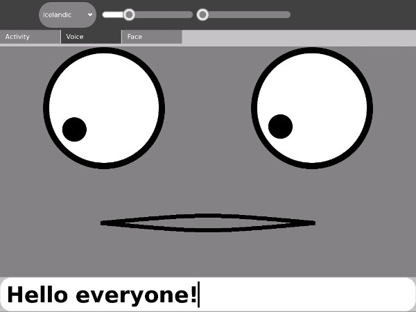
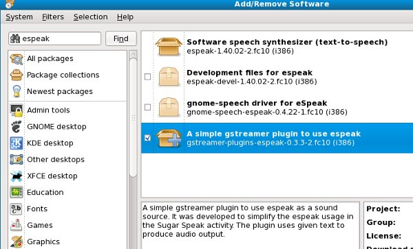
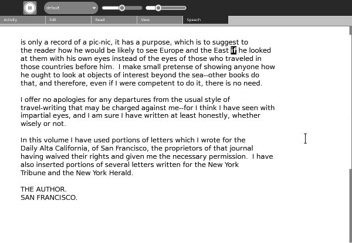
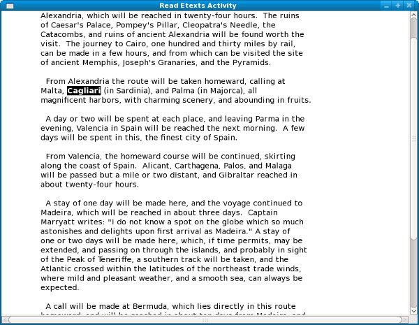

Adding Text To Speech
Introduction
Certainly one of the most popular Activities available is Speak, which takes the words you type in and speaks them out loud, at the same time displaying a cartoon face that seems to be speaking the words. You might be surprised to learn how little of the code in that Activity is used to get the words spoken. If your Activity could benefit from having words spoken out loud (the possibilities for educational Activities and games are definitely there) this chapter will teach you how to make it happen.

We Have Ways To Make You Talk
A couple of ways, actually, and neither one is that painful. They are:
- Running the espeak program directly
- Using the gstreamer espeak plugin
Both approaches have their advantages. The first one is the one used by Speak. (Technically, Speak uses the gstreamer plugin if it is available, and otherwise executes espeak directly. For what Speak is doing using the gstreamer plugin isn't really needed). Executing espeak is definitely the simplest method, and may be suitable for your own Activity. Its big advantage is that you do not need to have the gstreamer plugin installed. If your Activity needs to run on something other than the latest version of Sugar this will be something to consider.
The gstreamer plugin is what is used by Read Etexts to do text to speech with highlighting. For this application we needed to be able to do things that are not possible by just running espeak. For example:
- We needed to be able to pause and resume speech, because the Activity needs to speak a whole page worth of text, not just simple phrases.
- We needed to highlight the words being spoken as they are spoken.
You might think that you could achieve these objectives by running espeak on one word at a time. If you do, don't feel bad because I thought that too. On a fast computer it sounds really awful, like HAL 9000 developing a stutter towards the end of being deactivated. On the XO no sounds came out at all.
Originally Read Etexts used speech-dispatcher to do what the gstreamer plugin does. The developers of that program were very helpful in getting the highlighting in Read Etexts working, but speech-dispatcher needed to be configured before you could use it which was an issue for us. (There is more than one kind of text to speech software available and speech-dispatcher supports most of them. This makes configuration files inevitable). Aleksey Lim of Sugar Labs came up with the idea of using a gstreamer plugin and was the one who wrote it. He also rewrote much of Read Etexts so it would use the plugin if it was available, use speech-dispatcher if not, and would not support speech if neither was available.
Running espeak Directly
You can run the espeak program from the terminal to try out its options. To see what options are available for espeak you can use the man command:
man espeak
This will give you a manual page describing how to run the program and what options are available. The parts of the man page that are most interesting to us are these:
NAME
espeak - A multi-lingual software speech synthesizer.
SYNOPSIS
espeak [options] [<words>]
DESCRIPTION
espeak is a software speech synthesizer for English, and some other languages.
OPTIONS
-p <integer>
Pitch adjustment, 0 to 99, default is 50
-s <integer>
Speed in words per minute, default is 160
-v <voice name>
Use voice file of this name from espeak-data/voices
--voices[=<language code>]
Lists the available voices. If =<language code> is present then only those voices which are suitable for that language are listed.
Let's try out some of these options. First let's get a list of Voices:
espeak --voices Pty Language Age/Gender VoiceName File Other Langs 5 af M afrikaans af 5 bs M bosnian bs 5 ca M catalan ca 5 cs M czech cs 5 cy M welsh-test cy 5 de M german de 5 el M greek el 5 en M default default 5 en-sc M en-scottish en/en-sc (en 4) 2 en-uk M english en/en (en 2) ... and many more ...
Now that we know what the names of the voices are we can try them out. How about English with a French accent?
espeak "Your mother was a hamster and your father smelled of elderberries." -v fr
Let's try experimenting with rate and pitch:
espeak "I'm sorry, Dave. I'm afraid I can't do that." -s 120 -p 30
The next thing to do is to write some Python code to run espeak. Here is a short program adapted from the code in Speak:
import re
import subprocess
PITCH_MAX = 99
RATE_MAX = 99
PITCH_DEFAULT = PITCH_MAX/2
RATE_DEFAULT = RATE_MAX/3
def speak(text, rate=RATE_DEFAULT, pitch=PITCH_DEFAULT, voice="default"):
# espeak uses 80 to 370
rate = 80 + (370-80) * int(rate) / 100
subprocess.call(["espeak", "-p", str(pitch),
"-s", str(rate), "-v", voice, text],
stdout=subprocess.PIPE)
def voices():
out = []
result = subprocess.Popen(["espeak", "--voices"], stdout=subprocess.PIPE) \
.communicate()[0]
for line in result.split('\n'):
m = re.match(r'\s*\d+\s+([\w-]+)\s+([MF])\s+([\w_-]+)\s+(.+)', line)
if not m:
continue
language, gender, name, stuff = m.groups()
if stuff.startswith('mb/') or \
name in ('en-rhotic','english_rp','english_wmids'):
# these voices don't produce sound
continue
out.append((language, name))
return out
def main():
print voices()
speak("I'm afraid I can't do that, Dave.")
speak("Your mother was a hamster, and your father smelled of elderberries!", 30, 60, "fr")
if __name__ == "__main__":
main()
In the Git repository in the directory Adding_TTS this file is named espeak.py. Load this file into Eric and do Run Script from the Start menu to run it. In addition to hearing speech you should see this text:
[('af', 'afrikaans'), ('bs', 'bosnian'), ('ca', 'catalan'), ('cs', 'czech'), ('cy', 'welsh-test'), ('de', 'german'), ('el', 'greek'), ('en', 'default'), ('en-sc', 'en-scottish'), ('en-uk', 'english'), ('en-uk-north', 'lancashire'), ('en-us', 'english-us'), ('en-wi', 'en-westindies'), ('eo', 'esperanto'), ('es', 'spanish'), ('es-la', 'spanish-latin-american'), ('fi', 'finnish'), ('fr', 'french'), ('fr-be', 'french'), ('grc', 'greek-ancient'), ('hi', 'hindi-test'), ('hr', 'croatian'), ('hu', 'hungarian'), ('hy', 'armenian'), ('hy', 'armenian-west'), ('id', 'indonesian-test'), ('is', 'icelandic-test'), ('it', 'italian'), ('ku', 'kurdish'), ('la', 'latin'), ('lv', 'latvian'), ('mk', 'macedonian-test'), ('nl', 'dutch-test'), ('no', 'norwegian-test'), ('pl', 'polish'), ('pt', 'brazil'), ('pt-pt', 'portugal'), ('ro', 'romanian'), ('ru', 'russian_test'), ('sk', 'slovak'), ('sq', 'albanian'), ('sr', 'serbian'), ('sv', 'swedish'), ('sw', 'swahihi-test'), ('ta', 'tamil'), ('tr', 'turkish'), ('vi', 'vietnam-test'), ('zh', 'Mandarin'), ('zh-yue', 'cantonese-test')]
The voices() function returns a list of voices as one tuple per voice, and eliminates voices from the list that espeak cannot produce on its own. This list of tuples can be used to populate a drop down list.
The speak() function adjusts the value of rate so you can input a value between 0 and 99 rather than between 80 to 370. speak() is more complex in the Speak Activity than what we have here because in that Activity it monitors the spoken audio and generates mouth movements based on the amplitude of the voice. Making the face move is most of what the Speak Activity does, and since we aren't doing that we need very little code to make our Activity speak.
You can use import espeak to include this file in your own Activities.
Using The gstreamer espeak Plugin
The gstreamer espeak plugin can be installed in Fedora 10 or later using Add/Remove Software.

When you have this done you should be able to download the Read Etexts Activity (the real one, not the simplified version we're using for the book) from ASLO and try out the Speech tab. You should do that now. It will look something like this:

The book used in the earlier screenshots of this manual was Pride and Prejudice by Jane Austen. To balance things out the rest of the screenshots will be using The Innocents Abroad by Mark Twain.
Gstreamer is a framework for multimedia. If you've watched videos on the web you are familiar with the concept of streaming media. Instead of downloading a whole song or a whole movie clip and then playing it, streaming means the downloading and the playing happen at the same time, with the downloading just a bit behind the streaming. There are many different kinds of media files: MP3's, DivX, WMV, Real Media, and so on. For every kind of media file Gstreamer has a plugin.
Gstreamer makes use of a concept called pipelining. The idea is that the output of one program can become the input to another. One way to handle that situation is to put the output of the first program into a temporary file and have the second program read it. This would mean that the first program would have to finish running before the second one could begin. What if you could have both programs run at the same time and have the second program read the data as the first one wrote it out? It's possible, and the mechanism for getting data from one program to the other is called a pipe. A collection of programs joined together in this way is called a pipeline. The program that feeds data into a pipe is called a source, and the data that takes the data out of the pipe is called a sink.
The gstreamer espeak plugin uses a simple pipe: text goes into espeak at one end and sound comes out the other and is sent to your soundcard. You might think that doesn't sound much different from what we were doing before, but it is. When you just run espeak the program has to load itself into memory, speak the text you give it into the sound card, then unload itself. This is one of the reasons you can't just use espeak a word at a time to achieve speech with highlighted words. There is a short lag while the program is loading. It isn't that noticeable if you give espeak a complete phrase or sentence to speak, but if it happens for every word it is very noticeable. Using the gstreamer plugin we can have espeak loaded into memory all the time, just waiting for us to send some words into its input pipe. It will speak them and then wait for the next batch.
Since we can control what goes into the pipe it is possible to pause and resume speech.
The example we'll use here is a version of Read Etexts again, but instead of the Activity we're going to modify the standalone version. There is nothing special about the gstreamer plugin that makes it only work with Activities. Any Python program can use it. I'm only including Text to Speech as a topic in this manual because every Sugar installation includes espeak and many Activities could find it useful.
There is a in our Git repository named speech.py which looks like this:
import gst
voice = 'default'
pitch = 0
rate = -20
highlight_cb = None
def _create_pipe():
pipeline = 'espeak name=source ! autoaudiosink'
pipe = gst.parse_launch(pipeline)
def stop_cb(bus, message):
pipe.set_state(gst.STATE_NULL)
def mark_cb(bus, message):
if message.structure.get_name() == 'espeak-mark':
mark = message.structure['mark']
highlight_cb(int(mark))
bus = pipe.get_bus()
bus.add_signal_watch()
bus.connect('message::eos', stop_cb)
bus.connect('message::error', stop_cb)
bus.connect('message::element', mark_cb)
return (pipe.get_by_name('source'), pipe)
def _speech(source, pipe, words):
source.props.pitch = pitch
source.props.rate = rate
source.props.voice = voice
source.props.text = words;
pipe.set_state(gst.STATE_PLAYING)
info_source, info_pipe = _create_pipe()
play_source, play_pipe = _create_pipe()
# track for marks
play_source.props.track = 2
def voices():
return info_source.props.voices
def say(words):
_speech(info_source, info_pipe, words)
print words
def play(words):
_speech(play_source, play_pipe, words)
def is_stopped():
for i in play_pipe.get_state():
if isinstance(i, gst.State) and i == gst.STATE_NULL:
return True
return False
def stop():
play_pipe.set_state(gst.STATE_NULL)
def is_paused():
for i in play_pipe.get_state():
if isinstance(i, gst.State) and i == gst.STATE_PAUSED:
return True
return False
def pause():
play_pipe.set_state(gst.STATE_PAUSED)
def rate_up():
global rate
rate = min(99, rate + 10)
def rate_down():
global rate
rate = max(-99, rate - 10)
def pitch_up():
global pitch
pitch = min(99, pitch + 10)
def pitch_down():
global pitch
pitch = max(-99, pitch - 10)
def prepare_highlighting(label_text):
i = 0
j = 0
word_begin = 0
word_end = 0
current_word = 0
word_tuples = []
omitted = [' ', '\n', u'\r', '_', '[', '{', ']', '}', '|', '<',\
'>', '*', '+', '/', '\\' ]
omitted_chars = set(omitted)
while i < len(label_text):
if label_text[i] not in omitted_chars:
word_begin = i
j = i
while j < len(label_text) and label_text[j] not in omitted_chars:
j = j + 1
word_end = j
i = j
word_t = (word_begin, word_end, label_text[word_begin: word_end].strip())
if word_t[2] != u'\r':
word_tuples.append(word_t)
i = i + 1
return word_tuples
def add_word_marks(word_tuples):
"Adds a mark between each word of text."
i = 0
marked_up_text = '<speak> '
while i < len(word_tuples):
word_t = word_tuples[i]
marked_up_text = marked_up_text + '<mark name="' + str(i) + '"/>' + word_t[2]
i = i + 1
return marked_up_text + '</speak>'
There is another file named ReadEtextsTTS.py which looks like this:
import sys
import os
import zipfile
import pygtk
import gtk
import getopt
import pango
import gobject
import time
import speech
speech_supported = True
try:
import gst
gst.element_factory_make('espeak')
print 'speech supported!'
except Exception, e:
speech_supported = False
print 'speech not supported!'
page=0
PAGE_SIZE = 45
class ReadEtextsActivity():
def __init__(self):
"The entry point to the Activity"
speech.highlight_cb = self.highlight_next_word
# print speech.voices()
def highlight_next_word(self, word_count):
if word_count <⁞ len(self.word_tuples):
word_tuple = self.word_tuples[word_count]
textbuffer = self.textview.get_buffer()
tag = textbuffer.create_tag()
tag.set_property('weight', pango.WEIGHT_BOLD)
tag.set_property( 'foreground', "white")
tag.set_property( 'background', "black")
iterStart = textbuffer.get_iter_at_offset(word_tuple[0])
iterEnd = textbuffer.get_iter_at_offset(word_tuple[1])
bounds = textbuffer.get_bounds()
textbuffer.remove_all_tags(bounds[0], bounds[1])
textbuffer.apply_tag(tag, iterStart, iterEnd)
v_adjustment = self.scrolled_window.get_vadjustment()
max = v_adjustment.upper - v_adjustment.page_size
max = max * word_count
max = max / len(self.word_tuples)
v_adjustment.value = max
return True
def keypress_cb(self, widget, event):
"Respond when the user presses one of the arrow keys"
global done
global speech_supported
keyname = gtk.gdk.keyval_name(event.keyval)
if keyname == 'KP_End' and speech_supported:
if speech.is_paused() or speech.is_stopped():
speech.play(self.words_on_page)
else:
speech.pause()
return True
if keyname == 'plus':
self.font_increase()
return True
if keyname == 'minus':
self.font_decrease()
return True
if speech_supported and speech.is_stopped() == False and\
speech.is_paused == False:
# If speech is in progress, ignore other keys.
return True
if keyname == '7':
speech.pitch_down()
speech.say('Pitch Adjusted')
return True
if keyname == '8':
speech.pitch_up()
speech.say('Pitch Adjusted')
return True
if keyname == '9':
speech.rate_down()
speech.say('Rate Adjusted')
return True
if keyname == '0':
speech.rate_up()
speech.say('Rate Adjusted')
return True
if keyname == 'KP_Right':
self.page_next()
return True
if keyname == 'Page_Up' or keyname == 'KP_Up':
self.page_previous()
return True
if keyname == 'KP_Left':
self.page_previous()
return True
if keyname == 'Page_Down' or keyname == 'KP_Down':
self.page_next()
return True
if keyname == 'Up':
self.scroll_up()
return True
if keyname == 'Down':
self.scroll_down()
return True
return False
def page_previous(self):
global page
page=page-1
if page < 0: page=0
self.show_page(page)
v_adjustment = self.scrolled_window.get_vadjustment()
v_adjustment.value = v_adjustment.upper - v_adjustment.page_size
def page_next(self):
global page
page=page+1
if page >= len(self.page_index): page=0
self.show_page(page)
v_adjustment = self.scrolled_window.get_vadjustment()
v_adjustment.value = v_adjustment.lower
def font_decrease(self):
font_size = self.font_desc.get_size() / 1024
font_size = font_size - 1
if font_size < 1:
font_size = 1
self.font_desc.set_size(font_size * 1024)
self.textview.modify_font(self.font_desc)
def font_increase(self):
font_size = self.font_desc.get_size() / 1024
font_size = font_size + 1
self.font_desc.set_size(font_size * 1024)
self.textview.modify_font(self.font_desc)
def scroll_down(self):
v_adjustment = self.scrolled_window.get_vadjustment()
if v_adjustment.value == v_adjustment.upper - v_adjustment.page_size:
self.page_next()
return
if v_adjustment.value < v_adjustment.upper - v_adjustment.page_size:
new_value = v_adjustment.value + v_adjustment.step_increment
if new_value > v_adjustment.upper - v_adjustment.page_size:
new_value = v_adjustment.upper - v_adjustment.page_size
v_adjustment.value = new_value
def scroll_up(self):
v_adjustment = self.scrolled_window.get_vadjustment()
if v_adjustment.value == v_adjustment.lower:
self.page_previous()
return
if v_adjustment.value > v_adjustment.lower:
new_value = v_adjustment.value - v_adjustment.step_increment
if new_value < v_adjustment.lower:
new_value = v_adjustment.lower
v_adjustment.value = new_value
def show_page(self, page_number):
global PAGE_SIZE, current_word
position = self.page_index[page_number]
self.etext_file.seek(position)
linecount = 0
label_text = ''
textbuffer = self.textview.get_buffer()
while linecount < PAGE_SIZE:
line = self.etext_file.readline()
label_text = label_text + unicode(line, 'iso-8859-1')
linecount = linecount + 1
textbuffer.set_text(label_text)
self.textview.set_buffer(textbuffer)
self.word_tuples = speech.prepare_highlighting(label_text)
self.words_on_page = speech.add_word_marks(self.word_tuples)
def save_extracted_file(self, zipfile, filename):
"Extract the file to a temp directory for viewing"
filebytes = zipfile.read(filename)
f = open("/tmp/" + filename, 'w')
try:
f.write(filebytes)
finally:
f.close()
def read_file(self, filename):
"Read the Etext file"
global PAGE_SIZE
if zipfile.is_zipfile(filename):
self.zf = zipfile.ZipFile(filename, 'r')
self.book_files = self.zf.namelist()
self.save_extracted_file(self.zf, self.book_files[0])
currentFileName = "/tmp/" + self.book_files[0]
else:
currentFileName = filename
self.etext_file = open(currentFileName,"r")
self.page_index = [ 0 ]
linecount = 0
while self.etext_file:
line = self.etext_file.readline()
if not line:
break
linecount = linecount + 1
if linecount >= PAGE_SIZE:
position = self.etext_file.tell()
self.page_index.append(position)
linecount = 0
if filename.endswith(".zip"):
os.remove(currentFileName)
def delete_cb(self, widget, event, data=None):
speech.stop()
return False
def destroy_cb(self, widget, data=None):
speech.stop()
gtk.main_quit()
def main(self, file_path):
self.window = gtk.Window(gtk.WINDOW_TOPLEVEL)
self.window.connect("delete_event", self.delete_cb)
self.window.connect("destroy", self.destroy_cb)
self.window.set_title("Read Etexts Activity")
self.window.set_size_request(800, 600)
self.window.set_border_width(0)
self.read_file(file_path)
self.scrolled_window = gtk.ScrolledWindow(hadjustment=None, vadjustment=None)
self.textview = gtk.TextView()
self.textview.set_editable(False)
self.textview.set_left_margin(50)
self.textview.set_cursor_visible(False)
self.textview.connect("key_press_event", self.keypress_cb)
self.font_desc = pango.FontDescription("sans 12")
self.textview.modify_font(self.font_desc)
self.show_page(0)
self.scrolled_window.add(self.textview)
self.window.add(self.scrolled_window)
self.textview.show()
self.scrolled_window.show()
self.window.show()
gtk.main()
if __name__ == "__main__":
try:
opts, args = getopt.getopt(sys.argv[1:], "")
ReadEtextsActivity().main(args[0])
except getopt.error, msg:
print msg
print "This program has no options"
sys.exit(2)
The program ReadEtextsTTS has only a few changes to make it enabled for speech. The first one checks for the existence of the gstreamer plugin:
speech_supported = True
try:
import gst
gst.element_factory_make('espeak')
print 'speech supported!'
except Exception, e:
speech_supported = False
print 'speech not supported!'
This code detects whether the plugin is installed by attempting to import for the Python library associated with it named "gst". If the import fails it throws an Exception and we catch that Exception and use it to set a variable named speech_supported to False. We can check the value of this variable in other places in the program to make a program that works with Text To Speech if it is available and without it if it is not. Making a program work in different environments by doing these kinds of checks is called degrading gracefully. Catching exceptions on imports is a common technique in Python to achieve this. If you want your Activity to run on older versions of Sugar you may find yourself using it.
The next bit of code we're going to look at highlights a word in the textview and scrolls the textview to keep the highlighted word visible.
class ReadEtextsActivity():
def __init__(self):
"The entry point to the Activity"
speech.highlight_cb = self.highlight_next_word
# print speech.voices()
def highlight_next_word(self, word_count):
if word_count < len(self.word_tuples):
word_tuple = self.word_tuples[word_count]
textbuffer = self.textview.get_buffer()
tag = textbuffer.create_tag()
tag.set_property('weight', pango.WEIGHT_BOLD)
tag.set_property( 'foreground', "white")
tag.set_property( 'background', "black")
iterStart = textbuffer.get_iter_at_offset(word_tuple[0])
iterEnd = textbuffer.get_iter_at_offset(word_tuple[1])
bounds = textbuffer.get_bounds()
textbuffer.remove_all_tags(bounds[0], bounds[1])
textbuffer.apply_tag(tag, iterStart, iterEnd)
v_adjustment = self.scrolled_window.get_vadjustment()
max = v_adjustment.upper - v_adjustment.page_size
max = max * word_count
max = max / len(self.word_tuples)
v_adjustment.value = max
return True
In the __init__() method we assign a variable called highlight_cb in speech.py with a method called highlight_next_word(). This gives speech.py a way to call that method every time a new word in the textview needs to be highlighted.
The next line will print the list of tuples containing Voice names to the terminal if you uncomment it. We aren't letting the user change voices in this application but it would not be difficult to add that feature.
The code for the method that highlights the words follows. What it does is look in a list of tuples that contain the starting and ending offsets of every word in the textarea's text buffer. The caller of this method passes in a word number (for instance the first word in the buffer is word 0, the second is word 1, and so on). The method looks up that entry in the list, gets its starting and ending offsets, removes any previous highlighting, then highlights the new text. In addition to that it figures out what fraction of the total number of words the current word is and scrolls the textviewer enough to make sure that word is visible.
Of course this method works best on pages without many blank lines, which fortunately is most pages. It does not work so well on title pages. An experienced programmer could probably come up with a more elegant and reliable way of doing this scrolling. Let me know what you come up with.
Further down we see the code that gets the keystrokes the user enters and does speech-related things with them:
def keypress_cb(self, widget, event):
"Respond when the user presses one of the arrow keys"
global done
global speech_supported
keyname = gtk.gdk.keyval_name(event.keyval)
if keyname == 'KP_End' and speech_supported:
if speech.is_paused() or speech.is_stopped():
speech.play(self.words_on_page)
else:
speech.pause()
return True
if speech_supported and speech.is_stopped() == False and \
speech.is_paused == False:
# If speech is in progress, ignore other keys.
return True
if keyname == '7':
speech.pitch_down()
speech.say('Pitch Adjusted')
return True
if keyname == '8':
speech.pitch_up()
speech.say('Pitch Adjusted')
return True
if keyname == '9':
speech.rate_down()
speech.say('Rate Adjusted')
return True
if keyname == '0':
speech.rate_up()
speech.say('Rate Adjusted')
return True
As you can see, the functions we're calling are all in the file speech.py that we imported. You don't have to fully understand how these functions work to make use of them in your own Activities. Notice that the code as written prevents the user from changing pitch or rate while speech is in progress. Notice also that there are two different methods in speech.py for doing speech. play() is the method for doing text to speech with word highlighting. say() is for saying short phrases produced by the user interface, in this case "Pitch adjusted" and "Rate adjusted". Of course if you put code like this in your Activity you would use the _() function so these phrases could be translated into other languages.
There is one more bit of code we need to do text to speech with highlighting: we need to prepare the words to be spoken to be highlighted in the textviewer.
def show_page(self, page_number):
global PAGE_SIZE, current_word
position = self.page_index[page_number]
self.etext_file.seek(position)
linecount = 0
label_text = ''
textbuffer = self.textview.get_buffer()
while linecount < PAGE_SIZE:
line = self.etext_file.readline()
label_text = label_text + unicode(line, 'iso-8859-1')
linecount = linecount + 1
textbuffer.set_text(label_text)
self.textview.set_buffer(textbuffer)
self.word_tuples = speech.prepare_highlighting(label_text)
self.words_on_page = speech.add_word_marks(self.word_tuples)
The beginning of this method reads a page's worth of text into a string called label_text and puts it into the textview's buffer. The last two lines splits the text into words, leaving in punctuation, and puts each word and its beginning and ending offsets into a tuple. The tuples are added to a List.
speech.add_word_marks() converts the words in the List to a document in SSML (Speech Synthesis Markup Language) format. SSML is a standard for adding tags (sort of like the tags used to make web pages) to text to tell speech software what to do with the text. We're just using a very small part of this standard to produce a marked up document with a mark between each word, like this:
<speak>
<mark name="0"/>The<mark name="1"/>quick<mark name-"2"/>brown<mark name="3"/>
fox<mark name="4"/>jumps
</speak>
When espeak reads this file it will do a callback into our program every time it reads one of the mark tags. The callback will contain the number of the word in the word_tuples List which it will get from the name attribute of the mark tag. In this way the method being called will know which word to highlight. The advantage of using the mark name rather than just highlighting the next word in the textviewer is that if espeak should fail to do one of the callbacks the highlighting won't be thrown out of sync. This was a problem with speech-dispatcher.
A callback is just what it sounds like. When one program calls another program it can pass in a function or method of its own that it wants the second program to call when something happens.
To try out the new program run
./ReadEtextsTTS.py bookfile
from the Terminal. You can adjust pitch and rate up and down using the keys 7, 8, 9, and 0 on the top row of the keyboard. It should say "Pitch Adjusted" or "Rate Adjusted" when you do that. You can start, pause, and resume speech with highlighting by using the End key on the keypad. (On the XO laptop the "game" keys are mapped to what is the numeric keypad on a normal keyboard. This makes these keys handy for use when the XO is folded into tablet mode and the keyboard is not available). You cannot change pitch or rate while speech is in progress. Attempts to do that will be ignored. The program in action looks like this:

That brings us to the end of the topic of Text to Speech. If you're like to see more, the Git repository for this book has a few more sample programs that use the gstreamer espeak plugin. These examples were created by the author of the plugin and demonstrate some other ways you can use it. There's even a "choir" program that demonstrates multiple voices speaking at the same time.
Author : TextToSpeech
© James Simmons 2010
Modifications:
Lachlan Musicman 2010
License : General Public License
Produced in FLOSS Manuals (http://www.flossmanuals.net)